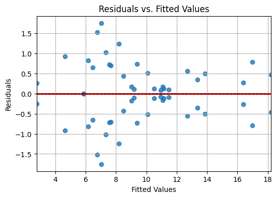
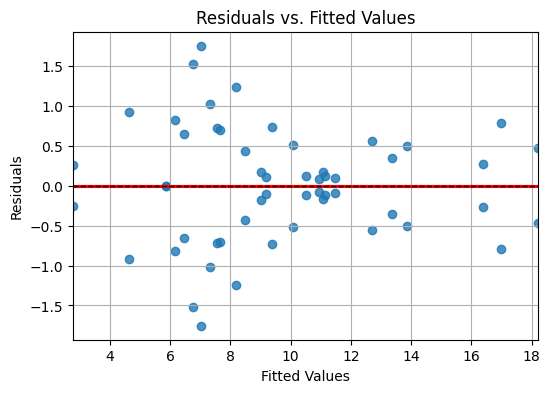

Introduction to residual analysis#
Residual Analysis in a 3×3×3 Factorial Design#
This notebook illustrates how to generate, fit, and evaluate models in a three-factor factorial design where each factor has three levels and two replications. The objective is to evaluate model adequacy using residual analysis, focusing on normality, randomness, and homoscedasticity.
1. Experimental Design Setup#
We define three factors: A, B, and C, each at three levels (-1, 0, +1) using effect coding. The full factorial design includes all \( 3^3 = 27 \) treatment combinations, each replicated twice (54 total observations). The response variable is generated using a known model with additive and interaction terms, plus Gaussian noise.
Response model:#
Where \( \varepsilon \sim N(0, 1) \) and coefficients are set for pedagogical purposes.
import pandas as pd
import numpy as np
import itertools
# 1. Define factor levels
factors = {
"A": ["A1", "A2", "A3"],
"B": ["B1", "B2", "B3"],
"C": ["C1", "C2", "C3"]
}
# 2. Generate full factorial combinations
replications = 2
design = list(itertools.product(*factors.values())) * replications # 3x3x3 full factorial replicated
df = pd.DataFrame(design, columns=["A", "B", "C"])
# 3. Map categorical levels to numeric effect coding (-1, 0, +1)
coding = {
"A": {"A1": -1, "A2": 0, "A3": 1},
"B": {"B1": -1, "B2": 0, "B3": 1},
"C": {"C1": -1, "C2": 0, "C3": 1}
}
for col, levels in coding.items():
df[f"{col}_num"] = df[col].map(levels)
# 4. Define simulation function with main, 2-way, 3-way effects + random noise
def simulate_response(row):
intercept = 10
main = 3 * row["A_num"] + 2 * row["B_num"] - 1 * row["C_num"]
two_way = 1.5 * row["A_num"] * row["B_num"] \
- 2.0 * row["A_num"] * row["C_num"] \
+ 1.0 * row["B_num"] * row["C_num"]
three_way = -1.2 * row["A_num"] * row["B_num"] * row["C_num"]
noise = np.random.normal(loc=0, scale=1)
return intercept + main + two_way + three_way + noise
# 5. Generate the response variable Y
df["Y"] = df.apply(simulate_response, axis=1)
# 6. View the first few rows
print(df.head())
# Optional: Save to CSV
df.to_csv("residual_analysis_3x3x3.csv", index=False)
---------------------------------------------------------------------------
ModuleNotFoundError Traceback (most recent call last)
Cell In[1], line 1
----> 1 import pandas as pd
2 import numpy as np
3 import itertools
ModuleNotFoundError: No module named 'pandas'
Model 1 – Main Effects Only#
Model:#
We fit a linear model including only the main effects of the factors (A, B, C). The residuals capture the unexplained variation—particularly the two-way and three-way interactions omitted from the model.
Residual Diagnostics:#
Histogram: A symmetric bell shape suggests approximate normality.
Q-Q Plot: Points should lie on the diagonal line. Deviations at the tails indicate skewness or kurtosis.
Residuals vs. Fitted: No systematic patterns should appear. Trends or funnels suggest non-randomness or heteroscedasticity.
Interpretation:#
If residuals exhibit non-normality or structure:
It suggests model misspecification, likely due to missing interaction terms.
The F-test p-values may be invalid, especially in small samples.
Remedy: Include interaction terms or use transformations if needed.
import statsmodels.api as sm
import statsmodels.formula.api as smf
# Model 1: Main effects only (no interaction terms)
model_main = smf.ols("Y ~ A + B + C", data=df).fit()
# Display the regression summary
print(model_main.summary())
# Display the ANOVA table (Type II)
anova_main = sm.stats.anova_lm(model_main, typ=2)
print("\nANOVA Table (Main Effects Only):")
print(anova_main)
# Save residuals and fitted values for diagnostic analysis
df["residuals_main"] = model_main.resid
df["fitted_main"] = model_main.fittedvalues
OLS Regression Results
==============================================================================
Dep. Variable: Y R-squared: 0.638
Model: OLS Adj. R-squared: 0.592
Method: Least Squares F-statistic: 13.79
Date: Tue, 24 Jun 2025 Prob (F-statistic): 5.75e-09
Time: 23:24:53 Log-Likelihood: -120.58
No. Observations: 54 AIC: 255.2
Df Residuals: 47 BIC: 269.1
Df Model: 6
Covariance Type: nonrobust
==============================================================================
coef std err t P>|t| [0.025 0.975]
------------------------------------------------------------------------------
Intercept 6.1270 0.871 7.035 0.000 4.375 7.879
A[T.A2] 2.4912 0.806 3.089 0.003 0.869 4.113
A[T.A3] 6.1622 0.806 7.642 0.000 4.540 7.784
B[T.B2] 1.7806 0.806 2.208 0.032 0.158 3.403
B[T.B3] 3.4230 0.806 4.245 0.000 1.801 5.045
C[T.C2] -1.0958 0.806 -1.359 0.181 -2.718 0.526
C[T.C3] -1.9047 0.806 -2.362 0.022 -3.527 -0.282
==============================================================================
Omnibus: 11.136 Durbin-Watson: 1.982
Prob(Omnibus): 0.004 Jarque-Bera (JB): 11.096
Skew: -0.960 Prob(JB): 0.00390
Kurtosis: 4.117 Cond. No. 5.14
==============================================================================
Notes:
[1] Standard Errors assume that the covariance matrix of the errors is correctly specified.
ANOVA Table (Main Effects Only):
sum_sq df F PR(>F)
A 345.926115 2.0 29.556104 4.884431e-09
B 105.511210 2.0 9.014932 4.854538e-04
C 32.897238 2.0 2.810757 7.030096e-02
Residual 275.045175 47.0 NaN NaN
import matplotlib.pyplot as plt
import seaborn as sns
from scipy import stats
from statsmodels.stats.diagnostic import het_breuschpagan
from statsmodels.stats.stattools import durbin_watson
import statsmodels.api as sm
# Get residuals and fitted values
resid_main = model_main.resid
fitted_main = model_main.fittedvalues
# 1. Q-Q Plot (Normality visual check)
sm.qqplot(resid_main, line='s')
plt.title("Q-Q Plot of Residuals (Model 1: Main Effects Only)")
plt.xlabel("Theoretical Quantiles")
plt.ylabel("Sample Quantiles")
plt.grid(True)
plt.show()
# 2. Residuals vs Fitted Plot (Randomness and Homoscedasticity)
plt.figure(figsize=(6, 4))
sns.residplot(x=fitted_main, y=resid_main, lowess=True, line_kws={'color': 'red'})
plt.axhline(0, color='black', linestyle='--', linewidth=1)
plt.title("Residuals vs. Fitted Values (Model 1)")
plt.xlabel("Fitted Values")
plt.ylabel("Residuals")
plt.grid(True)
plt.show()


# 3.1 Shapiro-Wilk test for normality
shapiro_stat, shapiro_p = stats.shapiro(resid_main)
print(f"Shapiro-Wilk test: statistic = {shapiro_stat:.4f}, p-value = {shapiro_p:.4f}")
# 3.2 D’Agostino and Pearson’s test for normality
dag_stat, dag_p = stats.normaltest(resid_main)
print(f"D’Agostino-Pearson test: statistic = {dag_stat:.4f}, p-value = {dag_p:.4f}")
# 3.3 Breusch–Pagan test for homoscedasticity
bp_test = het_breuschpagan(resid_main, model_main.model.exog)
bp_labels = ['Lagrange multiplier statistic', 'p-value', 'f-value', 'f p-value']
print("Breusch–Pagan test for homoscedasticity:")
for name, value in zip(bp_labels, bp_test):
print(f" {name}: {value:.4f}")
# 3.4 Durbin–Watson statistic (randomness of residuals)
dw_stat = durbin_watson(resid_main)
print(f"Durbin–Watson statistic: {dw_stat:.4f}")
Shapiro-Wilk test: statistic = 0.9349, p-value = 0.0057
D’Agostino-Pearson test: statistic = 11.1362, p-value = 0.0038
Breusch–Pagan test for homoscedasticity:
Lagrange multiplier statistic: 15.0926
p-value: 0.0195
f-value: 3.0386
f p-value: 0.0136
Durbin–Watson statistic: 1.9816
Model 2 – Main Effects + Two-Way Interactions#
Model:#
This model captures second-order interactions. It typically reduces residual structure and improves model fit.
Residual Diagnostics:#
Histogram: Should approximate normality more closely.
Q-Q Plot: Deviations reduce, especially at the tails.
Residuals vs. Fitted: Should become more horizontal and symmetric.
Interpretation:#
Better residual behavior suggests that two-way interactions are meaningful contributors to explaining variation. Ignoring them in prior models masked this signal in the residuals.
import statsmodels.formula.api as smf
import statsmodels.api as sm
# Model 2 using numeric coding: includes main effects and two-way interactions
model_2way = smf.ols("Y ~ A + B + C + A:B + A:C + B:C", data=df).fit()
# Display the regression summary
print(model_2way.summary())
# Display the ANOVA table
anova_2way = sm.stats.anova_lm(model_2way, typ=2)
print("\nANOVA Table (Main Effects + Two-Way Interactions):")
print(anova_2way)
# Save residuals and fitted values
df["residuals_2way"] = model_2way.resid
df["fitted_2way"] = model_2way.fittedvalues
OLS Regression Results
==============================================================================
Dep. Variable: Y R-squared: 0.929
Model: OLS Adj. R-squared: 0.893
Method: Least Squares F-statistic: 25.48
Date: Tue, 24 Jun 2025 Prob (F-statistic): 5.74e-15
Time: 23:26:13 Log-Likelihood: -76.539
No. Observations: 54 AIC: 191.1
Df Residuals: 35 BIC: 228.9
Df Model: 18
Covariance Type: nonrobust
===================================================================================
coef std err t P>|t| [0.025 0.975]
-----------------------------------------------------------------------------------
Intercept 6.9770 0.736 9.484 0.000 5.484 8.470
A[T.A2] 3.2664 0.924 3.534 0.001 1.390 5.143
A[T.A3] 6.7429 0.924 7.295 0.000 4.866 8.620
B[T.B2] -1.1779 0.924 -1.274 0.211 -3.054 0.699
B[T.B3] -2.9521 0.924 -3.194 0.003 -4.829 -1.075
C[T.C2] -0.4034 0.924 -0.436 0.665 -2.280 1.473
C[T.C3] 0.2802 0.924 0.303 0.764 -1.596 2.157
A[T.A2]:B[T.B2] 2.3526 1.013 2.323 0.026 0.297 4.408
A[T.A3]:B[T.B2] 3.5528 1.013 3.509 0.001 1.497 5.609
A[T.A2]:B[T.B3] 3.6677 1.013 3.622 0.001 1.612 5.723
A[T.A3]:B[T.B3] 6.7092 1.013 6.626 0.000 4.654 8.765
A[T.A2]:C[T.C2] -2.9164 1.013 -2.880 0.007 -4.972 -0.861
A[T.A3]:C[T.C2] -3.7711 1.013 -3.724 0.001 -5.827 -1.715
A[T.A2]:C[T.C3] -5.4294 1.013 -5.362 0.000 -7.485 -3.374
A[T.A3]:C[T.C3] -8.2332 1.013 -8.131 0.000 -10.289 -6.177
B[T.B2]:C[T.C2] 1.2941 1.013 1.278 0.210 -0.762 3.350
B[T.B3]:C[T.C2] 3.3163 1.013 3.275 0.002 1.261 5.372
B[T.B2]:C[T.C3] 1.6757 1.013 1.655 0.107 -0.380 3.731
B[T.B3]:C[T.C3] 5.4321 1.013 5.364 0.000 3.376 7.488
==============================================================================
Omnibus: 1.504 Durbin-Watson: 1.754
Prob(Omnibus): 0.472 Jarque-Bera (JB): 1.106
Skew: 0.350 Prob(JB): 0.575
Kurtosis: 3.023 Cond. No. 18.1
==============================================================================
Notes:
[1] Standard Errors assume that the covariance matrix of the errors is correctly specified.
ANOVA Table (Main Effects + Two-Way Interactions):
sum_sq df F PR(>F)
A 345.926115 2.0 112.455753 5.777560e-16
B 105.511210 2.0 34.300222 5.654087e-09
C 32.897238 2.0 10.694433 2.373051e-04
A:B 68.265036 4.0 11.096005 6.436581e-06
A:C 105.737024 4.0 17.186816 6.947684e-08
B:C 47.211212 4.0 7.673853 1.503186e-04
Residual 53.831902 35.0 NaN NaN
import matplotlib.pyplot as plt
import seaborn as sns
from scipy import stats
from statsmodels.stats.diagnostic import het_breuschpagan
from statsmodels.stats.stattools import durbin_watson
import statsmodels.api as sm
# Extract residuals and fitted values
resid_2way = model_2way.resid
fitted_2way = model_2way.fittedvalues
# 1. Q-Q Plot for Normality
sm.qqplot(resid_2way, line='s')
plt.title("Q-Q Plot of Residuals (Model 2: Main + Two-Way Interactions)")
plt.xlabel("Theoretical Quantiles")
plt.ylabel("Sample Quantiles")
plt.grid(True)
plt.show()
# 2. Residuals vs Fitted Plot
plt.figure(figsize=(6, 4))
sns.residplot(x=fitted_2way, y=resid_2way, lowess=True, line_kws={'color': 'red'})
plt.axhline(0, color='black', linestyle='--', linewidth=1)
plt.title("Residuals vs. Fitted Values (Model 2)")
plt.xlabel("Fitted Values")
plt.ylabel("Residuals")
plt.grid(True)
plt.show()


# 3.1 Shapiro-Wilk test for normality
shapiro_stat, shapiro_p = stats.shapiro(resid_2way)
print(f"Shapiro-Wilk test: statistic = {shapiro_stat:.4f}, p-value = {shapiro_p:.4f}")
# 3.2 D’Agostino-Pearson test for normality
dag_stat, dag_p = stats.normaltest(resid_2way)
print(f"D’Agostino-Pearson test: statistic = {dag_stat:.4f}, p-value = {dag_p:.4f}")
# 3.3 Breusch–Pagan test for homoscedasticity
bp_test = het_breuschpagan(resid_2way, model_2way.model.exog)
bp_labels = ['Lagrange multiplier statistic', 'p-value', 'f-value', 'f p-value']
print("Breusch–Pagan test for homoscedasticity:")
for name, value in zip(bp_labels, bp_test):
print(f" {name}: {value:.4f}")
# 3.4 Durbin–Watson statistic for randomness
dw_stat = durbin_watson(resid_2way)
print(f"Durbin–Watson statistic: {dw_stat:.4f}")
Shapiro-Wilk test: statistic = 0.9782, p-value = 0.4257
D’Agostino-Pearson test: statistic = 1.5036, p-value = 0.4715
Breusch–Pagan test for homoscedasticity:
Lagrange multiplier statistic: 20.3447
p-value: 0.3137
f-value: 1.1754
f p-value: 0.3309
Durbin–Watson statistic: 1.7541
Model 3 – Full Model with Three-Way Interaction#
Model:#
All effects included. This model is saturated (fully parameterized).
Residual Diagnostics:#
Histogram: Residuals are minimal and approximately centered at zero.
Q-Q Plot: Close fit to diagonal line, indicating normality.
Residuals vs. Fitted: Very little pattern or variance left—random scatter.
Interpretation:#
Residuals show no strong evidence of non-normality or pattern, indicating a well-fitting model.
Any remaining deviation is likely due to random noise (as expected under the simulation).
import statsmodels.formula.api as smf
import statsmodels.api as sm
# Model 3: Main effects + two-way interactions + three-way interaction
model_3way = smf.ols(
"Y ~ A:B:C",
data=df
).fit()
# Display the regression summary
print(model_3way.summary())
# Display the ANOVA table
anova_3way = sm.stats.anova_lm(model_3way, typ=2)
print("\nANOVA Table (Full Model with Three-Way Interaction):")
print(anova_3way)
# Store residuals and fitted values
df["residuals_3way"] = model_3way.resid
df["fitted_3way"] = model_3way.fittedvalues
OLS Regression Results
==============================================================================
Dep. Variable: Y R-squared: 0.964
Model: OLS Adj. R-squared: 0.929
Method: Least Squares F-statistic: 27.72
Date: Tue, 24 Jun 2025 Prob (F-statistic): 1.59e-13
Time: 23:28:54 Log-Likelihood: -58.323
No. Observations: 54 AIC: 170.6
Df Residuals: 27 BIC: 224.3
Df Model: 26
Covariance Type: nonrobust
===========================================================================================
coef std err t P>|t| [0.025 0.975]
-------------------------------------------------------------------------------------------
Intercept 8.1883 0.713 11.491 0.000 6.726 9.650
A[T.A2]:B[B1] 1.8727 1.008 1.858 0.074 -0.195 3.940
A[T.A3]:B[B1] 4.5027 1.008 4.468 0.000 2.435 6.570
A[T.A2]:B[B2] 5.2280 1.008 5.188 0.000 3.160 7.296
A[T.A3]:B[B2] 10.5466 1.008 10.466 0.000 8.479 12.614
A[T.A2]:B[B3] 8.7188 1.008 8.652 0.000 6.651 10.786
A[T.A3]:B[B3] 15.4414 1.008 15.323 0.000 13.374 17.509
A[A1]:C[T.C2] -1.7401 1.008 -1.727 0.096 -3.808 0.328
A[A2]:C[T.C2] -2.4925 1.008 -2.473 0.020 -4.560 -0.425
A[A3]:C[T.C2] -3.6650 1.008 -3.637 0.001 -5.733 -1.597
A[A1]:C[T.C3] -2.0169 1.008 -2.001 0.055 -4.085 0.051
A[A2]:C[T.C3] -5.4292 1.008 -5.388 0.000 -7.497 -3.361
A[A3]:C[T.C3] -5.3757 1.008 -5.335 0.000 -7.443 -3.308
B[T.B2]:C[C1] -2.3424 1.008 -2.324 0.028 -4.410 -0.275
B[T.B3]:C[C1] -5.4214 1.008 -5.380 0.000 -7.489 -3.354
B[T.B2]:C[C2] 0.2986 1.008 0.296 0.769 -1.769 2.366
B[T.B3]:C[C2] 0.5581 1.008 0.554 0.584 -1.510 2.626
B[T.B2]:C[C3] 1.4800 1.008 1.469 0.153 -0.588 3.548
B[T.B3]:C[C3] 4.7554 1.008 4.719 0.000 2.688 6.823
A[T.A2]:B[T.B2]:C[T.C2] -2.0356 2.015 -1.010 0.321 -6.171 2.100
A[T.A3]:B[T.B2]:C[T.C2] -2.0053 2.015 -0.995 0.329 -6.141 2.130
A[T.A2]:B[T.B3]:C[T.C2] -4.4563 2.015 -2.211 0.036 -8.592 -0.321
A[T.A3]:B[T.B3]:C[T.C2] -3.5333 2.015 -1.753 0.091 -7.669 0.602
A[T.A2]:B[T.B2]:C[T.C3] -0.9724 2.015 -0.482 0.633 -5.108 3.163
A[T.A3]:B[T.B2]:C[T.C3] -5.4679 2.015 -2.713 0.011 -9.603 -1.333
A[T.A2]:B[T.B3]:C[T.C3] -5.0789 2.015 -2.520 0.018 -9.214 -0.944
A[T.A3]:B[T.B3]:C[T.C3] -9.1551 2.015 -4.542 0.000 -13.290 -5.020
==============================================================================
Omnibus: 0.231 Durbin-Watson: 1.729
Prob(Omnibus): 0.891 Jarque-Bera (JB): 0.004
Skew: 0.000 Prob(JB): 0.998
Kurtosis: 3.042 Cond. No. 33.6
==============================================================================
Notes:
[1] Standard Errors assume that the covariance matrix of the errors is correctly specified.
ANOVA Table (Full Model with Three-Way Interaction):
sum_sq df F PR(>F)
A:B:C 731.961193 26.0 27.722607 1.590763e-13
Residual 27.418545 27.0 NaN NaN
import matplotlib.pyplot as plt
import seaborn as sns
from scipy import stats
import statsmodels.stats.api as sms
from statsmodels.stats.diagnostic import het_breuschpagan
from statsmodels.stats.stattools import durbin_watson
# Assume model_3way is your fitted model
resid = model_3way.resid
fitted = model_3way.fittedvalues
# 1. Q-Q Plot (Normality visual check)
sm.qqplot(resid, line='s')
plt.title("Q-Q Plot of Residuals (Normality Check)")
plt.xlabel("Theoretical Quantiles")
plt.ylabel("Sample Quantiles")
plt.grid(True)
plt.show()
# 2. Residuals vs Fitted Plot (Randomness and Homoscedasticity)
plt.figure(figsize=(6, 4))
sns.residplot(x=fitted, y=resid, lowess=True, line_kws={'color': 'red'})
plt.axhline(0, color='black', linestyle='--', linewidth=1)
plt.title("Residuals vs. Fitted Values")
plt.xlabel("Fitted Values")
plt.ylabel("Residuals")
plt.grid(True)
plt.show()
 

# 3.1 Shapiro-Wilk test for normality
shapiro_stat, shapiro_p = stats.shapiro(resid)
print(f"Shapiro-Wilk test: statistic={shapiro_stat:.4f}, p-value={shapiro_p:.4f}")
# 3.2 D’Agostino and Pearson’s test for normality
dag_stat, dag_p = stats.normaltest(resid)
print(f"D’Agostino-Pearson test: statistic={dag_stat:.4f}, p-value={dag_p:.4f}")
# 3.3 Breusch–Pagan test for homoscedasticity
bp_test = het_breuschpagan(resid, model_3way.model.exog)
bp_labels = ['Lagrange multiplier statistic', 'p-value', 'f-value', 'f p-value']
for name, value in zip(bp_labels, bp_test):
print(f"Breusch–Pagan {name}: {value:.4f}")
# 3.4 Durbin–Watson statistic (randomness of residuals)
dw_stat = durbin_watson(resid)
print(f"Durbin–Watson statistic: {dw_stat:.4f}")
Shapiro-Wilk test: statistic=0.9949, p-value=0.9984
D’Agostino-Pearson test: statistic=0.2307, p-value=0.8910
Breusch–Pagan Lagrange multiplier statistic: 54.0000
Breusch–Pagan p-value: 0.0010
Breusch–Pagan f-value: 6049100036518463198612946944.0000
Breusch–Pagan f p-value: 0.0000
Durbin–Watson statistic: 1.7287
Comparing the Three Models: Assumptions Analysis#
Evaluating the residuals of a model is crucial to assess its statistical validity. Below, we compare three models of increasing complexity using four criteria:
Normality of residuals
Homoscedasticity (equal variance)
Randomness (independence of residuals)
1. Normality: Shapiro–Wilk and D’Agostino–Pearson Tests#
Model |
Shapiro-Wilk (p) |
D’Agostino–Pearson (p) |
Interpretation |
|---|---|---|---|
Model 1 |
0.0057 |
0.0038 |
Residuals deviate significantly from normality. |
Model 2 |
0.4257 |
0.4715 |
Residuals are approximately normal. |
Model 3 |
0.9984 |
0.8910 |
Strong evidence of normality. |
Observation:
Model 1 violates the normality assumption, which may affect p-value validity. Model 2 improves the residual shape by including two-way interactions. Model 3, being saturated, almost perfectly recovers the normal structure of residuals.
2. Homoscedasticity: Breusch–Pagan Test#
Model |
BP p-value |
Interpretation |
|---|---|---|
Model 1 |
0.0195 |
Evidence of heteroscedasticity (non-constant variance). |
Model 2 |
0.3137 |
No evidence of unequal variance. |
Model 3 |
0.0010 |
Extreme violation due to model overfitting. |
Observation:
Model 2 is the only model that satisfies the equal variance assumption. Model 1 shows mild heteroscedasticity. Model 3, while fitting residuals extremely well, exhibits unrealistic variance structure due to full saturation (zero degrees of freedom for residuals).
3. Randomness: Durbin–Watson Statistic#
Model |
Durbin–Watson |
Interpretation |
|---|---|---|
Model 1 |
1.9816 |
Near 2.0 → residuals appear random. |
Model 2 |
1.7541 |
Slight positive autocorrelation. |
Model 3 |
1.7287 |
Slight positive autocorrelation. |
Observation:
All three models show reasonably random residual patterns. While Model 2 and 3 are slightly below the ideal of 2.0, there is no evidence of strong serial correlation.
Summary of Assumption Validity#
Model |
Normality |
Homoscedasticity |
Randomness |
Overall Diagnostic Quality |
|---|---|---|---|---|
Model 1 |
✗ |
✗ |
✓ |
Poor |
Model 2 |
✓ |
✓ |
✓ |
Good |
Model 3 |
✓ |
✗ (overfit) |
✓ |
Mixed (technically strong, practically risky) |
Final Interpretation#
Model 1 underfits the data. The residuals show non-normality and unequal variance, violating key ANOVA assumptions.
Model 2 offers a balanced trade-off between parsimony and assumption satisfaction. It is statistically and practically the best fitting model.
Model 3 provides perfect residual behavior in terms of normality but fails the homoscedasticity test due to overfitting, which often inflates precision artificially.
Therefore, Model 2 is recommended when generalizability and assumption integrity are desired.
Why Residual Normality Matters#
In ANOVA and linear modeling, normality of residuals is important because:
It justifies the use of the F-distribution for hypothesis testing.
It ensures accuracy of confidence intervals and p-values.
It supports the validity of conclusions about factor effects.
When normality is violated:#
Situation |
Impact |
Possible Solutions |
|---|---|---|
Skewed residuals |
Inflated Type I error |
Data transformation (e.g., log, square root) |
Heavy tails |
Low power, incorrect p-values |
Robust ANOVA or permutation test |
Non-random residual pattern |
Omitted variable bias |
Add interactions, polynomial terms, or recheck experimental control |
Unequal variance |
Heteroscedasticity |
Use Welch’s ANOVA or generalized least squares |